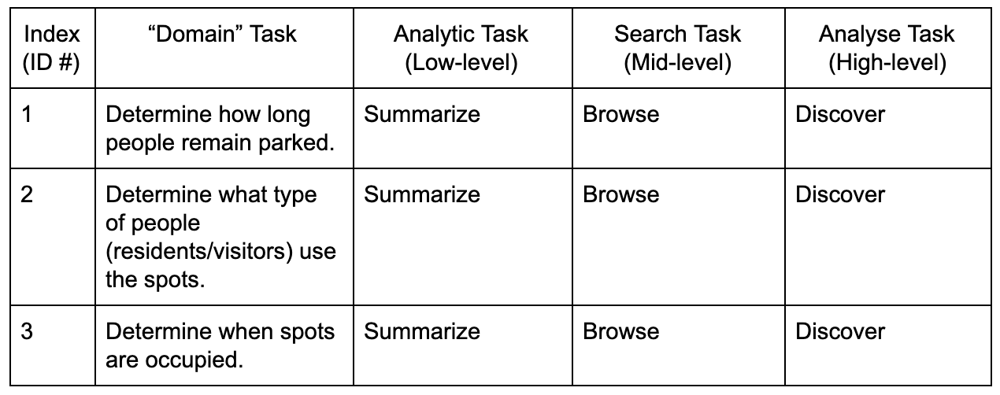
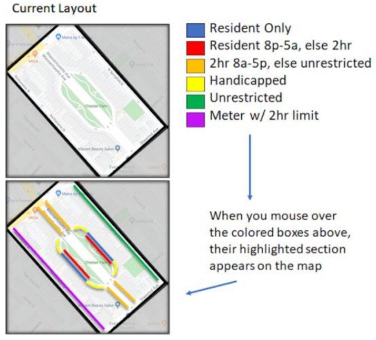
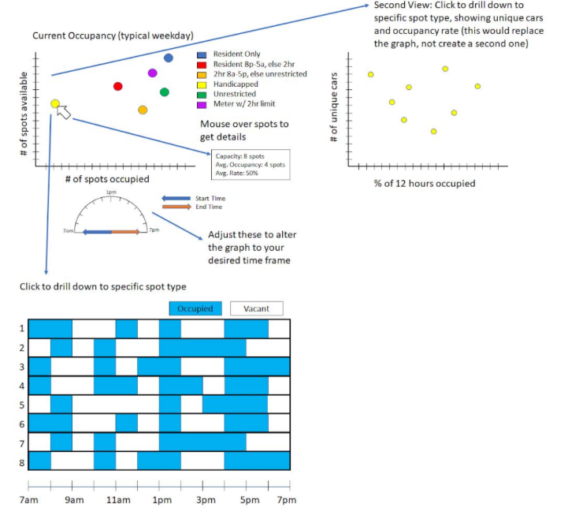

Visualization explanation
Slides.
Our group decided to make a visualization that would serve as a starting point for investigating how different parking spots in the chester square neightborhood are used. In this vien, we decided that two interesting metrics would be the number of unique cars that parked in a spot, and how many hours out of the 15 hour survery that a spot is occupied. To connect these two metrics, we made a heatmap with the respective axees, and a second visualization that shows the exact hours a spots were used when you hover over an element in the heatmap.
This already showes some interesting behavior, like how many spots that were used twice in a day were used in the morning and evening and vacant during midday. We hope that using this set of visualizations will be a great jumping off point for any analysis about how the parking spots in the chester square neightborhood are used.
Data Analysis
The data used in these visulizations was recorded on an hourly basis from 6 AM to 8 PM. Each hour, a pair of data collectors walked a preplanned route and recorded all of the necessary data. The data recorded includes the status of each spot on the route each hour, with statuses including: --> to indicate the same car as the previous hour, --- to indicate empty, X to indicate blocked, or the first three digits of a license plate to indicate a new car (with a check mark for those with a South End resident parking permit, and a location abbreviation if out of state).This data was recorded on sheets designed specifically for this area and had a row a for each parking spot and a column for each hour of the day. This made it easy to record whether or not a space was being used, was free or was being obstructed in some other way, such as construction or a vehicle taking up two spots. License plates were also recorded for each of the vehicles in order to determine how long cars remained parked in spots. License plates' states were also recorded for non-Massachusetts vehicles.
Task Analysis
The primary task of our group was to collect and then analyze data to determine how exactly the park’s parking spaces are being used. This will help inform the Chester Square Neighborhood Association in how they allocate and regulate parking spaces, as the resident use case is likely to be very different than people wanting to visit the park from out of the neighborhood.
This is done by completing three domain tasks. Our visualizations help users determine how long people remain parked in a given spot, determine whether or not residents or visitors are primarily using the parking spots and determine when spots are occupied. Each of these visualizations intend to enable users to "discover", since they enable users to obtain insights and new knowledge that was not previously known. These visualizations also enable users to "browse" since users can search for one or more items that fit some kind of specification or a range of attribute values. These visualizations "summarize" the data by providing a comprehensive view of our findings while also allowing for some comparison.
We’d like to distinguish the normal use case of parking in the area as well as any other use cases and use these to inform how parking should be designed in the area.
Design Process
| Initial Sketch | Web Sketch |
 |
 |
The above images show the iterations which led to our first visualization, the map. It began with the sketch, demonstrating the basic idea of a map and suggesting elements showing overall or average occupancies for each section with a heat map. As a group, we evaluated the idea but determined that the map concept could be better used to orient the user to the area and give them an overview of what the current parking situation looks like. We also decided that the occupancy rates could be better shown in other visualizations. So, the sketch developed into the second image seen above. This was developed on the computer and is clearly closer to what our actual visualization looks like. In this visualization, the user gets an overview of the parking layout and can get more details by mousing over the spot types and causing their section to highlight on the map in a categorical color scheme. We thought the CSNA would be able to use this feature to look at specific areas of their choosing, such as where they live, and know what spot types exist there. As said before, we thought that the occupancy could be better shown using different visualizations; therefore we enable the user to look at the occupancy of their chosen zones on another visualization. They can use brushing as well to choose to look at the occupancy of multiple parking zones.
| Initial Sketch 1 | Initial Sketch 2 | Web Sketch |
 |
 |
 |
Above here you see 3 images: two paper sketches and a more tuned web sketch. The paper sketches are what we started with, with the idea in mind that the first one would be used to evaluate how residents and nonresidents were using certain types of spots and for how long, and the second one would be used to see that information on a more granular level by brushing the first. We evaluated these visualizations and decided that while the x axis on Initial Sketch 1 held valuable information, the y axis didn't show information we thought would be as useful. We adapted the visualization and came up with what you see in the web sketch: 3 graphs that are connected via interactivity. The idea was that the user could see an overview of the average occupancy of each spot type compared to its capacity and then drill in to see how many unique cars parked in each spot over its total duration time and for how long. We wanted these graphs to be adjusted to different time windows using the gauge seen below the first graph. After considering what the CSNA wanted to see and what we can do in D3, we determined the first graph didn't show enough information to be value-added enough to keep nor did the gauge. The drill-down information is what really mattered, so we cut out the first graph and went with the information seen in graph 2: # of unique cars and % of 12 hours occupied. For the final visualization we changed the x axis to be a count of hours rather than a percentage and also converted the visualization into a heat map which uses a sequential color scheme. We made this choice because we thought it was a friendlier view to the user and an appropriate use of color based on the data. For the final visualization we also switched the axes on the bottom graph to make it easier to read. We linked these two visualizations.
Conclusion
The Chester Square Neighborhood Association asked the us to help them with their parking situation. It was difficult to find parking in the area, and they wondered if there were even enough spots for all the residents. They weren't sure there were the right types of spots near them, or the right distribution of those spots.
In order to answer their questions, we needed to collect data about the current parking patterns. We wanted to know what types of spots were located where, when they were empty, when they weren't, who was parking in them, when they were parking there, and for how long they were staying.
In conjunction with other groups needing the same data, we conducted a parking study in the Chester Square area. After ensuring the right control conditions (typical week day, no event closures, minimal [unavoidable] construction, no holidays, fine weather, etc), we collected data in the area for 12 hours. We recorded which car was parked in each spot every hour. We also recorded spots that were blocked for any reason or in which construction was occuring.
Acknowledgments
- D3: Data-Driven Documents by Mike Bostock.
- Pure CSS responsive "Fork me on GitHub" ribbon by Chris Heilmann.